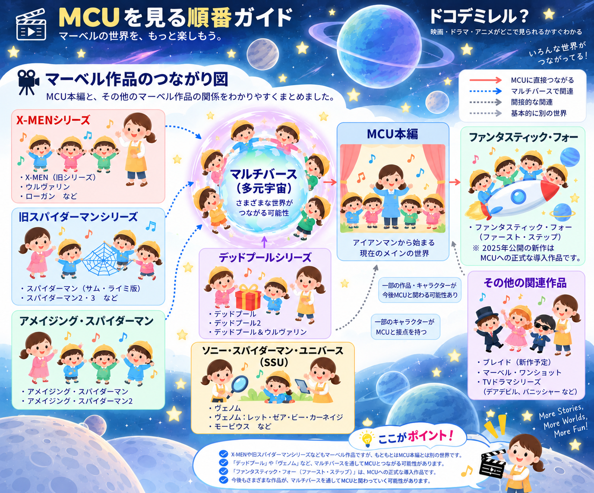

⚡ 1

MCUを初めて見る方にも、もう一度順番に楽しみたい方にも 分かりやすいように、作品を 「公開順」「時系列」「最短ルート」 の3つの見方に整理しています。
じっくり楽しむなら公開順、 物語の流れを追うなら時系列、 まず主要ストーリーを楽しむなら最短ルート。
気になる作品に寄り道しながら楽しむのもおすすめです。
MCUは 「Marvel Cinematic Universe （マーベル・シネマティック・ユニバース）」 の略です。 『アイアンマン』から始まる、 映画やドラマがひとつの世界として つながっているシリーズです。
※ マーベル作品すべてがMCUというわけではありません。 X-MENや旧スパイダーマンなど、 MCUとは別の世界から始まった作品もあります。 🔗 マーベル作品のつながりを見る →
「マーベル＝全部MCU」ではありません。 MCUとは別の世界から始まったシリーズもあり、 マルチバースを通じてつながる可能性があります。

実は、バットマンやスーパーマンは マーベルのヒーローではありません。 DC（DCコミックス）から生まれた、 別のヒーローたちです。
スパイダーマン ／ アイアンマン
キャプテン・アメリカ ／ ソー
X-MEN ／ デッドプール
バットマン ／ スーパーマン
ワンダーウーマン ／ フラッシュ
アクアマン など
同じ「アメコミのヒーロー」でも、 MARVELとDCは別のグループ。 まずはここを分けて考えると、作品の世界がぐっと分かりやすくなります。
スパイダーマン映画には、
実は3つの大きなシリーズがあります。
同じピーター・パーカーでも、
主演俳優や映画の世界がそれぞれ違います。
サム・ライミ監督
2002年から始まった、 トビー・マグワイア主演のスパイダーマン3部作。
マーク・ウェブ監督
トビー版とは別の世界で、 新たに始まったスパイダーマンシリーズです。
MCUのスパイダーマン
ソニーとマーベル・スタジオの協力によって、ここではじめてMCUの世界に仲間入りします。
特別な能力を持つミュータントたちが、
人間との共存をめぐって戦うX-MENシリーズ。
まずは、映画シリーズの原点となった3部作から見てみましょう。
プロフェッサーXたち、おなじみのX-MENが活躍
プロフェッサーXとマグニートーを中心に、 ウルヴァリンやストームたちの物語が描かれる最初のシリーズです。
若き日のプロフェッサーXとマグニートー
若き日のプロフェッサーXとマグニートーを中心に、 X-MENがどのように始まったのかを描くシリーズです。


その過去から、ひとつの物語の終着点まで
X-MENシリーズの中心人物のひとり、 ウルヴァリンを主役に描いた3作品です。
型破りなヒーロー、デッドプールを主人公にしたシリーズ。
まずは最初の2作品を見て、
その先のMCUとのつながりへ進んでみましょう。
独自の世界から始まった2作品
デッドプールの物語は、 MCUとは別の世界からスタートします。
2つのシリーズが交差する物語
デッドプールとウルヴァリンが共演し、 MCUやマルチバースとのつながりが大きく広がります。
マーベルを代表するヒーローチームのひとつ、
ファンタスティック・フォー。
映画では何度か新しく作り直されているため、
3つのシリーズに分けて見ると分かりやすくなります。
2005年から始まった2作品
4人のヒーローが誕生し、 チームとして活躍していく最初の映画シリーズです。
前の2作品とは別の物語
キャストや設定を一新して作られた、 2005年版とはつながらない新しいファンタスティック・フォーです。
MCUで新しく始まったファンタスティック4
これまでの映画シリーズの続編ではなく、 MCUで新しく描かれるファンタスティック4の物語です。
スパイダーマンのコミックに登場するキャラクターたちを
主人公にした、ソニーのマーベル映画です。
MCUとは別の世界から始まった作品として見ると、
関係が分かりやすくなります。
ヴェノムとエディ・ブロックを描く3作品
スパイダーマンのコミックから生まれた人気キャラクター、 ヴェノムを主人公にしたシリーズです。
スパイダーマンのコミックから広がったキャラクターたち
モービウス、マダム・ウェブ、クレイヴンなど、 スパイダーマン作品にゆかりのあるキャラクターを 主人公にした映画です。
MCUが始まる前から、
マーベルのキャラクターたちはさまざまな映画で活躍してきました。
ここでは、代表的な実写映画シリーズをまとめて紹介します。
1998年から続いた3部作
人間と吸血鬼の血を引くブレイドを主人公にした、 ダークな雰囲気のアクションシリーズです。
ニコラス・ケイジ主演の2作品
炎に包まれた姿で悪と戦う、 マーベルの超自然系ヒーローを描いたシリーズです。
2003年の映画からつながる2作品
デアデビルの映画から、 エレクトラを主人公にした作品へとつながります。
異なる設定で作られた2つの映画
犯罪者への復讐を続けるフランク・キャッスルを描いた作品。 2本は同じシリーズの続編ではなく、別の映画版として楽しめます。
マーベルには、このほかにも昔からさまざまな映像作品があります。 ここには今後、作品を少しずつ追加していきます。
MCUを公開された順番に楽しむ見方です。 新しいヒーローとの出会いや伏線、 アベンジャーズへと世界が広がっていく流れを、 当時の観客と同じ順番で楽しめます。
「どの順番で見るか迷ったら、まずは公開順」でもOK。 PHASEごとに作品をたどっていきましょう。
MCUの歩みをPHASEごとに見てみよう
1940年代 ～ 1990年代 物語の昔にも、すでにヒーローは存在していた。
2010年代前半 現代のヒーローが次々登場し、地球側のチームへ。


それぞれ活動していた地球側のヒーローが、ひとつのチームへ。
⑦ アベンジャーズ結成！


2014年ごろ 地球とは別に進んでいた宇宙側の物語
地球とは別の場所で、新たなヒーローチームが誕生。
⑪ ガーディアンズ登場！


2015年 ～ 2018年ごろ 仲間が増える一方、アベンジャーズには大きな亀裂が。


仲間だったアベンジャーズに亀裂が……。
⑰ シビル・ウォーへ


地球・宇宙だけではない、新しい領域のヒーローが登場。
㉑ ドクター・ストレンジへ


2018年 ～ 2023年 別々に進んできた地球・宇宙の物語が、大きく交わる。
地球・宇宙・魔術の世界。それぞれで動いていたヒーローたちが、同じ大きな脅威へ――。
㉔ インフィニティ・ウォーへ

2023年以降のメイン世界 既存ヒーローのその後、新ヒーロー、新しい事件へ再び枝分かれ。
物語は再び枝分かれ。ヒーローたちのその後と、新しい主人公たちへ。
㉖ エンドゲーム後の世界へ


別の時間軸・世界・宇宙 今度は『遠い場所』ではなく、世界そのものが広がっていく。
今度は場所だけでなく、世界そのものが広がっていく。
51 マルチバースの領域へ


2026年 ～ スパイダーマンの新章から、再びアベンジャーズの名へ。

ヒーローたちが再び集まるほどの、大きな出来事が迫る……？
59・60 次の大集結へ